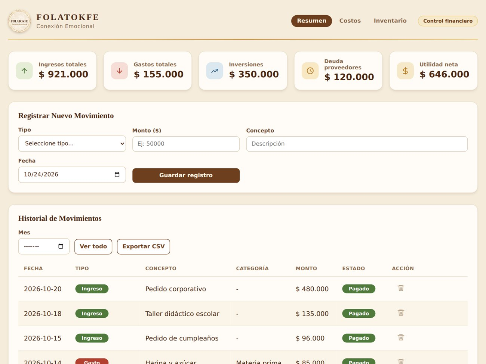
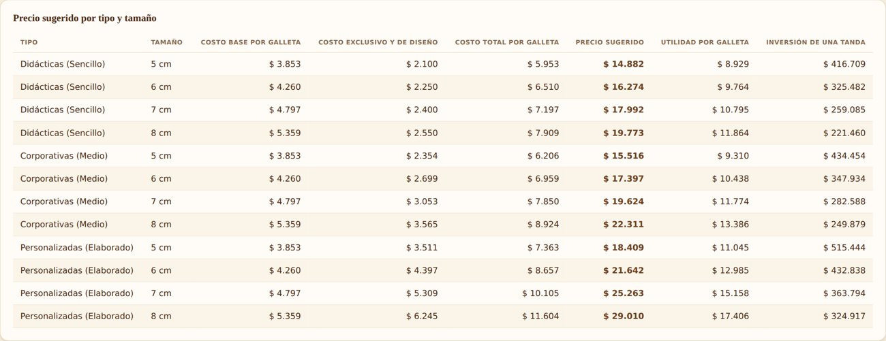
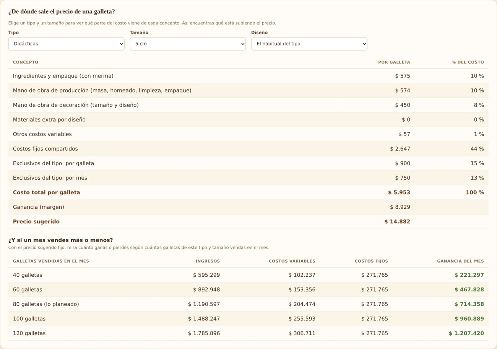
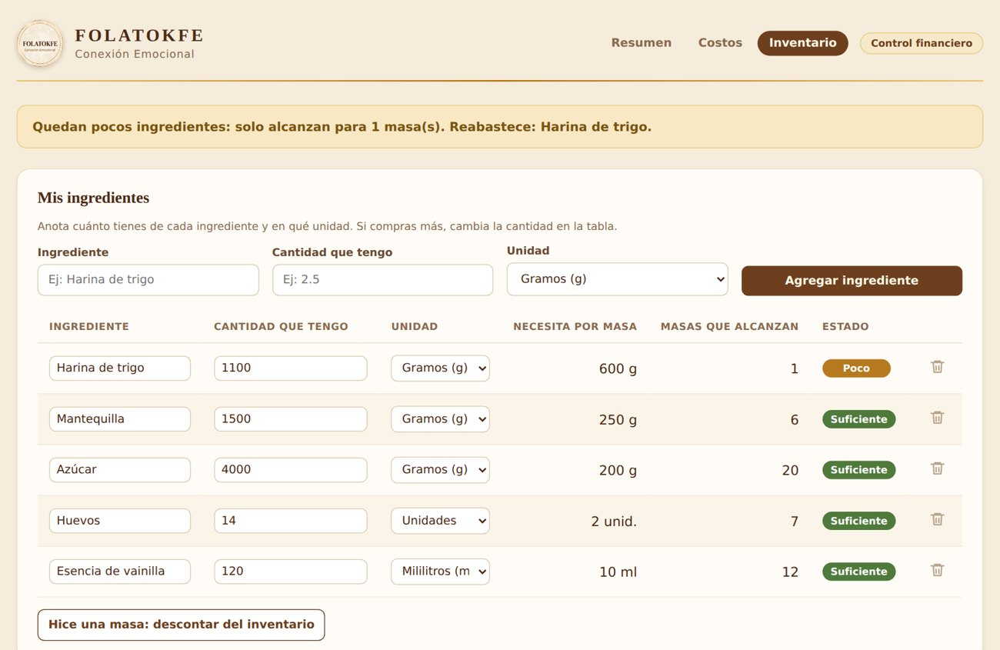

Folatokfe · Sistema de control financiero y costeo
Aplicación para un negocio de galletas: registra ingresos, gastos, inversiones y compras a crédito, calcula el costo y el precio de venta por tipo de producto y tamaño, y controla el inventario de ingredientes. Se abre con doble clic como una aplicación de escritorio.
JavaServletsMavenTomcatMySQL / MariaDBJDBCREST + JSONJavaScriptHTML / CSSPowerShell
Las capturas usan datos de demostración inventados; los datos reales del negocio no se muestran.




Qué hace
- Panel con ingresos, gastos, inversiones, deuda con proveedores y utilidad; historial con filtro por mes y exportación a CSV.
- Calculadora de costos para 4 tamaños y 3 tipos de producto: ingredientes con merma, mano de obra por actividad, tiempo de decoración según diseño, costos fijos y variables, y margen configurable.
- Precio sugerido y punto de equilibrio: cuántas galletas vender al mes para no perder, con simulación de meses de más o menos ventas.
- Inventario de ingredientes con alerta cuando no alcanza para una masa.
- Datos guardados en MySQL, con respaldo diario automático de la base.
Decisiones técnicas
- API REST con Servlets (GET, POST, PUT, DELETE) y respuestas JSON con Gson; consultas con
PreparedStatementy validación en el servidor (montos conBigDecimal, fechas, longitudes). - CORS con lista de orígenes permitidos y credenciales de base de datos por variables de entorno.
- Frontend sin frameworks:
textContenten lugar deinnerHTMLcon datos para evitar XSS, y exportación CSV que neutraliza la inyección de fórmulas. - Capa de persistencia que sincroniza el navegador con la base de datos sin reescribir las pantallas, y respaldo con
mysqldumpque conserva los últimos 14 días. - Lanzador en PowerShell que arranca MySQL y Tomcat en segundo plano, abre la app en su propia ventana y apaga MySQL de forma ordenada, sin forzar procesos.
Retos que resolví
- Diagnosticar el despliegue de un WAR en Tomcat con MySQL: registro del driver JDBC, variables de entorno y rutas.
- Corregir la lógica contable (compras a crédito frente a deuda) y repartir los costos fijos por galletas vendidas al mes, no por lotes.
- Modelar costos que dependen del tamaño y del diseño: rendimiento por tanda, tiempos por actividad y materiales de decoración.
Siguientes pasos
Registro de ventas por producto, edición de movimientos, cotizador en PDF e inicio de sesión con usuarios.